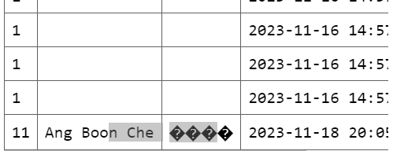

| week - 1 | week - 2 | week - 3 | week - 4 | week - 5 | |
For week 5, we have 2 full day to develop FRATS, for the first day
i continue the work from last week, after studying flask I am able to convert image to BLOB
(Binary Large Object) and able to insert it to sqlite3 database when user upload the image

So now when user upload the image the image will store in BLOB and the date time will be recorded.
After that I have develop the signup and login system so now when user signup a new accont, the
new account will be insert to database and user can use the account to login to FRATS
During this process I also face a lot of problem for example at first i dont know we are using flask
and the front-end developer Jai also dont know so during the merge of front-end and back-end i takes
me a long time change some html/css to flask.
But for now there is still a lot of things that is not complete, for example now we have two
database for user info and we need to combine them. Now I still new put in notifiaction system
for to tell user that they have successfully uploaded their image etc. Forgot password still havent
start yet, back-end for attendance cannot start since Peter and Reginald still working on the opencv
part. So there is still a lot of things need to do, for next few week we will keep working on it.